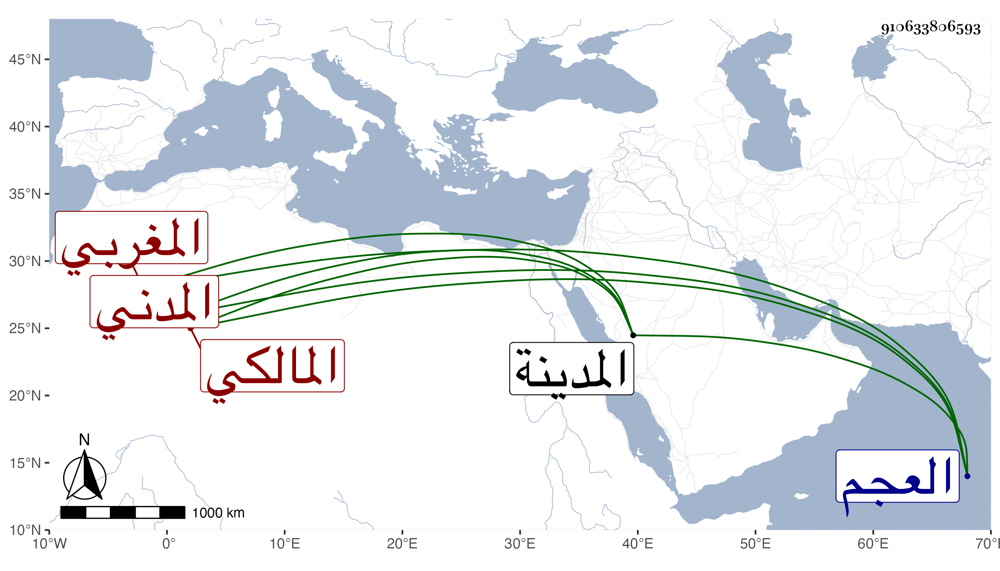

0902Sakhawi.DawLamic.ITO20230111-ara1.EIS1600.910633806593
Biography ID: 910633806593
278
محمد بن يعقوب بن يحيى بن عبد الله الجمال بن الشرف المغربي الأصل المدني المالكي الماضي حفيده النجم محمد بن التاج عبد الوهاب وأبوه في محليهما ، ذكر لي حفيده أنه أخذ عن الوانوغي وغيره بل ارتحل إلى العجم وأقام هناك أربع سنين وأخذ عن شيوخه في العقليات وتميز ودرس وناب في القضاء بالمدينة النبوية وألف في الفقه وعمل في المنطق مقدمة وخمس البردة قال ومن نظمه :
| طلبت للقلب بالأسفار لي راحه | فلم تكن مهجتي في الحق مرتاحه |
| مذ غبت عن مربع الأحباب والساحه | من كان مثلي فهل يستأهل الراحه |
مات تقريبا قريب الثلاثين .
